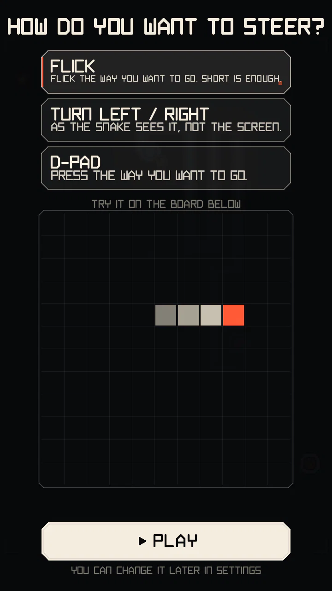

Board, controls, speed
The rules of plain movement: the board, how to steer, how fast the snake goes and how long it gets.
The board
- The grid is 13 cells wide and 21 tall (273 cells). The edges kill.
- The snake starts 6 cells long in the lower middle, heading up.
- One step moves the head exactly one cell. You can't reverse into your own neck: a 180° turn is ignored.
- Moving into the cell your tail is leaving on this step is allowed.
- A run ends when the head hits the edge, your own body, or any lethal structure (pylon, live post, wire, insulator). In the Campaign it also ends when the time runs out or you reach PERFECT.
Controls


Three schemes, picked on the first run and changeable in Settings:
FLICK (default)
Flick the way you want to go. It fires mid-gesture, so a very short flick is enough, and an L-shaped gesture makes two turns without lifting the finger. Screen direction = travel direction, which helps when the snake is heading down or sideways.
TURN LEFT / RIGHT
Tap the left or right half of the screen to turn left or right as the snake sees it (when it heads down, "left" is on the right of the screen). It fires on touch-down. Good for one-handed play.
D-PAD
Four separate keys in a cross (UP over DOWN in the middle, LEFT and RIGHT at the sides), either in a strip under the board or over the board; over the board the keys can be shown always or only while touched. A key turns on touch-down, and a press anywhere in a key's column counts for it, so there is no dead spot between keys; sliding the finger onto another key turns again. Under the board the strip stays above the phone's gesture area at the bottom edge, where a touch would reach the game late.
TURN INDICATOR: while a turn is waiting for the next step, a small chevron just outside the head points the way it will go (drawn in each theme's style). It can be turned off in SETTINGS > CONTROLS.
Input buffer: up to two turns are queued, so a quick double input makes a U-turn over two steps. Turns are applied on the next grid step.
Pause and resume
After RESUME in the pause menu, and after a one-time explanation card, the board counts down (3 beats of 0.5 s) before it moves again. Arrows from the head show which way the snake will start; steering during the count changes that first direction (a reversal is still ignored, steering straight on again cancels the turn). The tap that closes a card never steers. The video of the run skips the pause and the count.
Keyboard (desktop builds): arrows / WASD to steer, P to pause.
Speed
- The snake speeds up as you eat: quickly over the first nodes, then more and more gently. It never speeds up on time alone, so a patient player is not rushed.
- A higher multiplier makes it faster too, so the game gets more demanding exactly when your score is growing fastest. Dropping a level slows you down again.
- The SURGE module adds a short extra burst of speed.
- Speed changes gradually, never in random jumps.
The board runs at its own step rate whatever the screen refresh rate: 60, 90 or 120 Hz only make the motion smoother. Exact step times: Advanced mechanics.
Nodes and growth
Each node is worth 10 × multiplier points and makes the body longer. The first nodes grow it more, so there is soon enough body to build lanes with; later nodes add a little each.
Where nodes appear
- Never on the body or a structure, never on an event target, and always reachable from the head.
- Never right in front of your head.
- Cells next to your body and at middle distance are more likely: nodes tend to pull you back along your own lanes.
- The placement is seeded, so a replay or a Daily board always gets the same nodes for the same moves.
Going long without eating has a cost: see hunger.